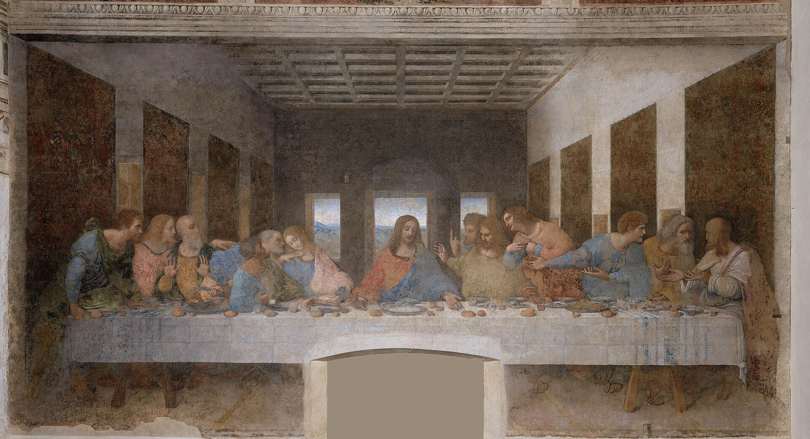

1 Corinthians 11 — The Mister Translation

Paul’s account in verses 23–25 is the account of the meal Jesus kept on the night he was betrayed. The painting shows the moment the Gospels place at that same meal, when Jesus says one of the apostles will betray him, with the bread and the wine on the table. It is the meal the words belong to, and not a picture of the Corinthians’ supper.

“Become imitators of me.” mimētai mou ginesthe, become imitators of me. The noun mimētēs is the word for one who copies a model (mimētēs), and Paul sets himself as the model, with the proviso that the model is Christ. The sentence closes the discussion of chapter 10, where Paul pleased all men in all things (10:33). The shelf: the NWT 2013 “Become imitators of me, just as I am of Christ.” The KJV “Be ye followers of me, even as I also am of Christ” uses “followers” for the same noun.
“The traditions just as I handed them to you.” tas paradoseis katechete, you hold fast the traditions. The noun paradosis is what is handed over (paradosis), and the verb paradidōmi is the verb Paul uses for handing on. Verse 23 uses the same verbs for what he received, so the chain of tradition runs through this chapter. The shelf: the NWT 2013 “you remember me and you are holding fast the traditions just as I handed them on to you,” and the ASV “hold fast the traditions, even as I delivered them to you.”
“The head of every man is Christ.” hē kephalē, the head. The Greek word kephalē can name a physical head, or a source, or a ruler; the sentence does not say which in each place, and the note records the readings instead of choosing. The translation keeps “head” in all three clauses. The shelf: the NWT 2013 “the head of every man is the Christ,” and the KJV “the head of every man is Christ; and the head of the woman is the man; and the head of Christ is God.” The NWT adds “the” before Christ, which the Greek article makes definite.
“The head of Christ is God.” The chain runs from God to Christ to man to woman. The verb is supplied in English: the Greek is an elliptical sentence. The shelf: the ASV “the head of Christ is God,” and the NWT 1984 “in turn the head of the Christ is God.”
“Dishonors his head.” kataischynei, shames, the verb for shame or disgrace (kataischynō). The sentence is about a man praying or prophesying with something on his head, and the word for head is the same kephalē as verse 3. The shelf: the NWT 2013 “Every man who prays or prophesies with something on his head shames his head,” and the ASV “Every man praying or prophesying, having his head covered, dishonoreth his head.”
“As if she were shaved.” the verse says the uncovered woman is the same as the shaved one, tē exyrēmenē. The shelf: the NWT 2013 “it is one and the same as if she were a woman with a shaved head,” and the ASV “it is one and the same thing as if she were shaven.” The translation keeps “shaved” as the Greek has it.
“The image and glory of God.” eikōn kai doxa theou, image and glory of God. Verse 7 gives the man no covering because of what he is. The sentence then says that the woman is the glory of the man. The shelf: the NWT 2013 “as he is God’s image and glory, but the woman is man’s glory.”
“Not out of woman.” The verses 8 and 9 give an order of origin. The Greek is ek, out of, and dia, for the sake of. The account of Eve in Genesis 2:21 and 2:23 is the background; the Hebrew word there is the one the project renders “side,” not “rib.” The shelf: the NWT 2013 “For man did not come from woman, but woman came from man.”
“Authority on her head, because of the angels.” exousian echein epi tēs kephalēs, to have authority over the head. The noun exousia is the word of chapter 9 for a right or a power (exousia). The sentence does not say whose authority it is, or whether it is a sign placed on her head or her own power, and the phrase “because of the angels” is not explained in the text. Readings differ, and the translation keeps the Greek words without choosing among them. The shelf: the KJV “to have power on her head because of the angels,” the NWT 2013 “a sign of authority on her head, because of the angels.” The KJV’s “power” and the NWT’s “sign of authority” are two of the readings the note records.
“In the Lord.” en kyriōi, in the Lord. The phrase is the sphere: it is the Lord who joins the two. The word kyrios is most naturally Jesus here, as in verse 23. The sentence then balances the order of origin of verse 8 with the order of birth of verse 12: just as woman came from man, so man comes through woman, but all things are from God. The shelf: the NWT 2013 “in connection with the Lord, neither is woman separate from man nor is man separate from woman,” and the KJV “in the Lord.”
“Judge for yourselves.” en hymin autois krinate, judge among yourselves. The verb krinō is the verb of the judgment in verse 32 and of the judgment of chapter 6 (6:2). Paul asks the readers to decide from their own sense of what is fitting.
“Does not nature itself teach you.” hē physis autē didaskei hymas, nature itself teaches you. The word physis is the order of things as it is. The sentence argues from what the Corinthians see, and the appeal is to a sense that is common, not to a text. The shelf: the NWT 2013 “Does not nature itself teach you that long hair is a dishonor to a man,” and the ASV “Doth not even nature itself teach you, that, if a man have long hair, it is a dishonor to him?”
“Given to her in place of a covering.” anti peribolaiou, instead of a covering. The word peribolaion is a wrap or a mantle. Whether the hair is the covering, or is a reason why she needs one, is a point on which the verse is read in different ways; the translation keeps Paul’s sentence and does not settle the reading. The shelf: the NWT 2013 “For her hair is given to her instead of a covering,” and the KJV “for her hair is given her for a covering.”
“The custom of the congregations.” synētheian, a custom, the word for what a group habitually does. The verse ends the argument by appeal to the practice of the congregations of God. The word ekklēsia is rendered “congregation” in every chapter of this translation. The shelf: the NWT 2013 “if anyone wants to argue in favor of some other custom, we have no other, nor do the congregations of God,” and the ASV “we have no such custom, neither the churches of God.”
“Not for the better but for the worse.” eis to kreisson alla eis to hēsson, not for the better but for the worse. The comparative words are the words of gain and loss, and the sentence says that the meeting does harm. The shelf: the NWT 2013 “it is, not for the better, but for the worse that you meet together.”
“Divisions.” schismata, divisions, a tearing. The word is the one of 1:10, where the first division is named. The next verse says there must also be haireseis, factions, hairesis, the word that gave English “heresy” and which here means a party or a school, not a false doctrine. The shelf: the NWT 2013 “For there will certainly also be sects among you,” the KJV “there must be also heresies among you,” and the ASV “there must be also factions among you.” The translation prints “factions,” because the word in this sentence is a party, not a belief.
“The Lord’s supper.” kyriakon deipnon, the adjective kyriakos, of the Lord, and the noun deipnon, the evening meal. The adjective is the word from which the English word “church” descends (kyriakon), and the project does not use it for ekklēsia. Here it names the meal. The shelf: the NWT 2013 “it is not really to eat the Lord’s Evening Meal,” the KJV “this is not to eat the Lord’s supper.”
“One is hungry, another is drunk.” hos men peinai, hos de methyei, one is hungry and another is drunk. The sentence contrasts those who have houses with those who have nothing (verse 22) at the same meal. The shelf: the NWT 2013 “so that one is hungry but another is intoxicated,” and the KJV “and one is hungry, and another is drunken.”
“I received from the Lord.” parelabon apo tou kyriou, I received from the Lord. The verb paralambanō is the verb of receiving a tradition, the counterpart of the handing over in verse 2 (paradosis). The Lord here is the one from whom the tradition comes, and the sentence then names him as the Lord Jesus.
“This is my body, which is for you.” touto mou estin to sōma to hyper hymōn, this is my body, the one for you. The words are the words of the institution and are parallel to Mark 14:22 and Matthew 26:26, and Luke 22:19. The word anamnēsis, remembrance, is the word of a reminder that makes the thing present again (anamnēsis). The shelf: the NWT 2013 “This means my body, which is in your behalf. Keep doing this in remembrance of me.” The KJV “this is my body, which is broken for you” adds “broken,” which the Greek printed here does not have.
“The new covenant in my blood.” hē kainē diathēkē estin en tō emō haimati, the new covenant is in my blood. The noun diathēkē is a covenant or a testament, and the KJV “testament” is the English word for it. The sentence sets the cup under the new covenant. The shelf: the NWT 2013 “This cup means the new covenant by virtue of my blood.” The NWT’s “means” is its reading of the copula; the Greek has estin, is.
“You proclaim the Lord’s death until he comes.” ton thanaton tou kyriou katangellete, achri hou elthēi, you proclaim the death of the Lord until he comes. The verb katangellō is to announce, and the meal is an announcement. The sentence looks forward to the coming, which is the subject of chapter 15. The shelf: the NWT 2013 “you keep proclaiming the death of the Lord, until he comes.” The KJV “ye do shew the Lord’s death till he come” uses “shew.”
“Unworthily.” anaxiōs, unworthily. The adverb is the word for what does not match the worth of a thing, and the sentence makes the guilt fall on the one who eats and drinks in that manner: enochos estai tou sōmatos kai tou haimatos tou kyriou, will be guilty of the body and the blood of the Lord. The shelf: the NWT 2013 “will be guilty respecting the body and the blood of the Lord,” and the KJV “shall be guilty of the body and blood of the Lord.”
“Let a man examine himself.” dokimazetō de anthrōpos heauton, let a man test himself. The verb dokimazō is the verb of testing metal, and the root is the one of the approved persons in verse 19. The shelf: the NWT 2013 “First let a man approve himself after scrutiny, and only then let him eat of the loaf,” and the KJV “let a man examine himself.”
“Not discerning the body.” mē diakrinōn to sōma, not discerning the body. The verb diakrinō is the verb of distinguishing, the same root as krinō, to judge. The sentence does not say whether “the body” means the body of Christ given in the bread, or the body of the congregation that eats; the reading is open, and the note records both. The NWT 2013 “without discerning the body” prints the Greek. The KJV “not discerning the Lord’s body” adds “the Lord’s,” which the Greek does not have.
“Weak and sick.” asthenēs kai arrōstoi, weak and sickly. The word asthenēs is the one of the weak conscience in 8:7. The sentence puts sickness and death among the people as a result of the meal. “Have fallen asleep” (koimōntai) is Paul’s word for those who have died. The shelf: the NWT 2013 “many among you are weak and sick, and quite a few are sleeping in death,” and the ASV “many among you are weak and sickly, and not a few sleep.”
“Disciplined by the Lord.” paideuometha hypo kyriou, we are disciplined by the Lord. The word kyrios here is not fixed in the sentence as Jesus or as God; the one who judges and disciplines is named the Lord, and the note records that the NWT prints “Jehovah.” The translation keeps “the Lord,” because the Greek text does not settle the referent. The shelf: the NWT 2013 “we are disciplined by Jehovah, so that we may not become condemned with the world,” and the KJV “we are chastened of the Lord, that we should not be condemned with the world.”
“Wait for one another.” ekdechesthe allēlous, wait for one another. The verb is the verb of waiting until someone arrives, and it closes the instruction with the word about the other, the same concern as 10:24. The shelf: the NWT 2013 “when you come together to eat it, wait for one another.”
“The remaining matters.” ta de loipa hōs an elthō diatajomai, the remaining matters I will set in order when I come. The chapter ends by saying other matters are left for the visit. The shelf: the NWT 2013 “as for the remaining matters, I will put them in order when I get there,” and the KJV “And the rest will I set in order when I come.”
Patterns worth carrying forward
Where this translation keeps the exact words: “congregation” for ekklēsia at 11:16, 11:18 and 11:22, the fixed rendering of every NT chapter; “factions” for haireseis at 11:19, a party and not a doctrine; “the Lord’s supper” for kyriakon deipnon at 11:20, with the adjective kept; “remembrance” for anamnēsis at 11:24–25; “unworthily” for anaxiōs at 11:27; “discerning” for diakrinō at 11:29–31.
Echoes paid. The cup and the bread of 10:16–17, now the words said over them (11:23–26); the table of the Lord of 10:21, now the supper that the Corinthians do not eat as the Lord’s (11:20); the pleasing all of 10:33, now the instruction to wait for one another (11:33); the conscience and the weak of 8:7–12, now the weak and sick among them (11:30); and the judgment of 6:2, now the judgment with the world (11:32).
Echoes planted. Spiritual things (pneumatika) return in chapter 12, where Paul says he does not want them ignorant (12:1). The coming of the Lord (11:26) returns in chapter 15 as the resurrection. The body (11:24–29) returns in chapter 12 as one body with many members.
Next in this book: 1 Corinthians 12, already on these pages. Paul turns from the supper to the spiritual gifts, and to the one body and its many members.